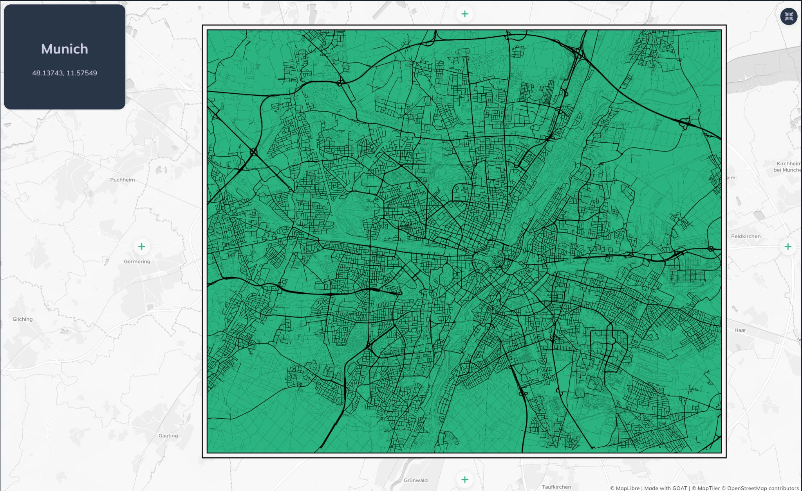

Overview
A minimalist street network map of Munich created for Day 14 of the #30DayMapChallenge on the theme of OpenStreetMap. The map strips away all labels, annotations and decorative elements — leaving only the clean form of the city as defined by its road infrastructure.
"I have always wanted to create a minimalist map, and today I finally made my first one using the street network of Munich."
Concept
Reduce to Essentials
All labels, POIs and background layers removed. Only the street geometry remains — letting the urban form speak for itself without visual noise.
OpenStreetMap Data
Road network extracted directly from OpenStreetMap via GOAT, covering Munich's full street hierarchy from motorways to pedestrian paths.
Urban Form Reading
The resulting map reveals Munich's structure — the radial ring road system, the density gradient from inner city to suburbs, and how major corridors shape the city's skeleton.
Tools & Data
- GOAT (Plan4Better) for street network extraction and visualisation
- OpenStreetMap road network data
- Minimalist cartographic styling — no labels, no fill, geometry only
Interactive Map
Explore the live interactive version on the GOAT platform:
Open Interactive Map